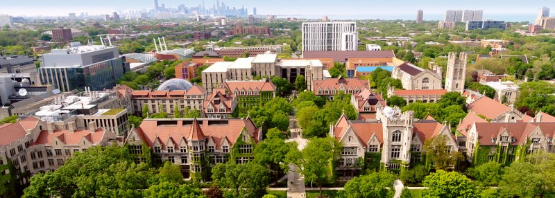
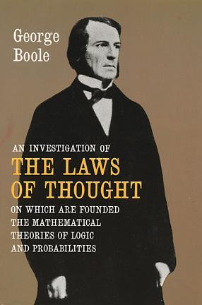
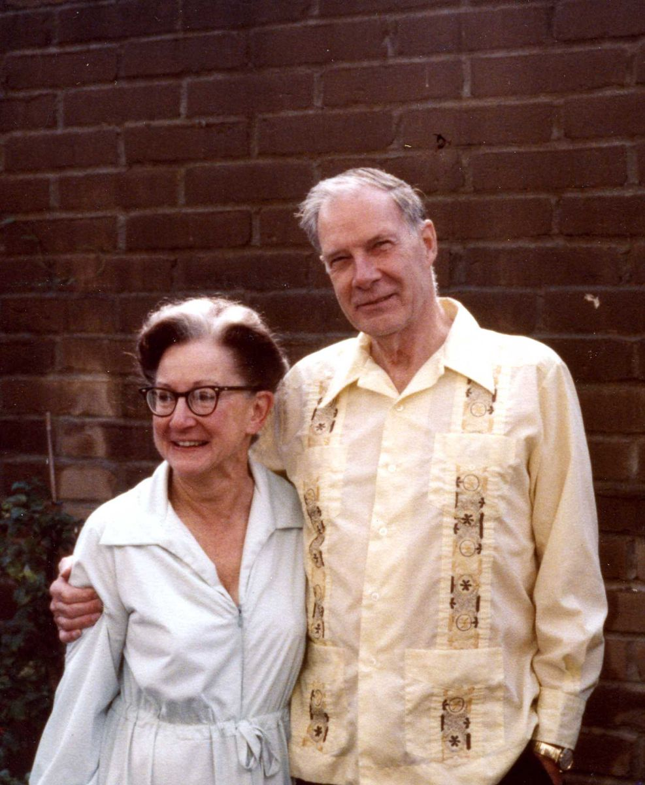
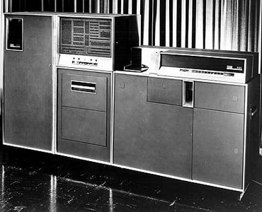
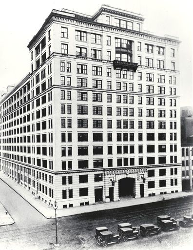
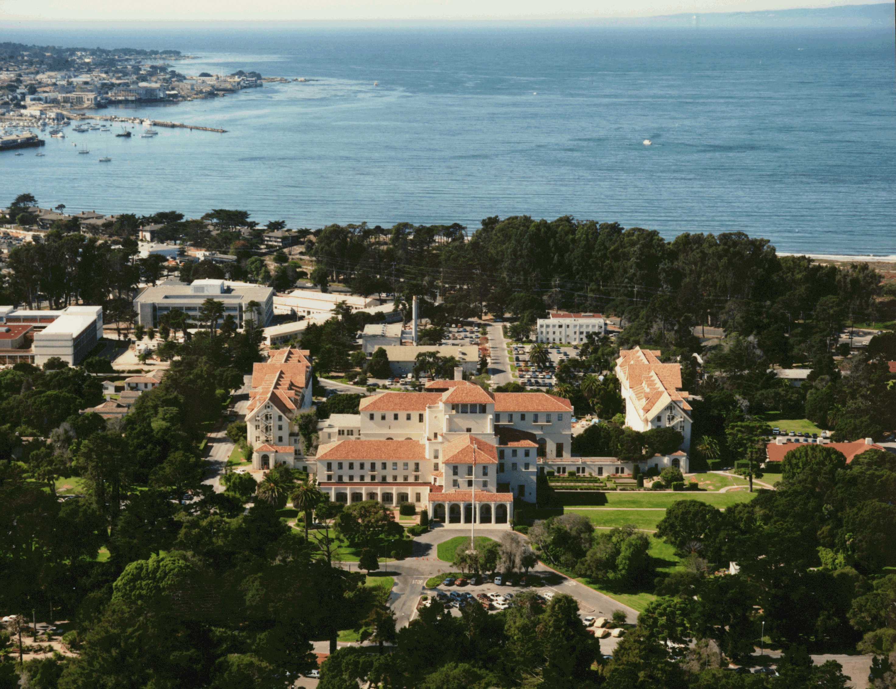
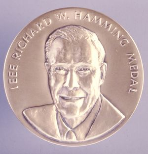

| Timeline |
Richard Wesley Hamming was born in Chicago, Illinois, USA on February 11, 1915, son of Richard J. Hamming and Mabel G. Redfield. He attended Crane Technical High School and Crane Junior College where he realized himself as a more able mathematician than his teacher at school. Due to the Great Depression (1929-1939), Richard’s only offer of a scholarship came from the University of Chicago.
He initially wanted to study in engineering, but since there were no engineering departments at the university, he instead majored in mathematics. From there he received his Bachelor of Science degree in 1934. After his undergraduate studies, Richard received his Master of Arts degree from the University of Nebraska in 1939 and his Ph.D. in mathematics from the University of Illinois in 1942. His interests in coding theory would later be more significant in his life after having discovered George Boole’s An Investigation of the Laws of Thought.
After receiving his doctorate in Philosophy, he would later marry Wanda Little on September 5, 1942, a fellow student who had received her MA in English literature. They would remain married till his death and had no children.
 In 1945, Hamming had been invited by a friend to visit Los Alamos, New Mexico for the Manhattan Project (A U.S. government project to create an atomic bomb with the support of Canada and the U.K.) at the Los Alamos Laboratory. A month later, his wife would soon join him. In 1945, Hamming had been invited by a friend to visit Los Alamos, New Mexico for the Manhattan Project (A U.S. government project to create an atomic bomb with the support of Canada and the U.K.) at the Los Alamos Laboratory. A month later, his wife would soon join him.
Richard was put in charge of the IBM calculating machines which played an imperative role in the project under the supervision of his boss, Hans Bethe, a theoretical physicist.
 He was tasked with programming the IBM calculating machines to compute solutions to equations given by the leading physicists like Richard Feynman, Enrico Fermi, Edward Teller, and Robert Oppenheimer. Wanda would work as a human computer with desk calculators for Fermi and Teller. He was tasked with programming the IBM calculating machines to compute solutions to equations given by the leading physicists like Richard Feynman, Enrico Fermi, Edward Teller, and Robert Oppenheimer. Wanda would work as a human computer with desk calculators for Fermi and Teller.
In 1946, he accepted a position at Bell Telephone Laboratories or BTL in the mathematics department. Although, he would visit Los Alamos Scientific Laboratories each summer for two weeks as a consultant.
 He was part of a group called the “Young Turks” from people who he related to growing up with being affected from depression and learned new skills in their war work. Together with them, he would create unconventional ideas whom some other colleagues were intolerable to and call him “egotistical”. He was aware of these feelings and responded by saying that “To reform the system, you must be willing to not be liked.” In his time at BTL, Richard had worked on problems involving design of telephone systems, travelling wave tubes, the equalization of television transmission lines, the stability of complex communication systems, and the blocking of calls through a telephone central office. One day, he experienced failure from the computers and in turn had no results to give to his colleagues. He then thought to himself if a machine could find an error then what’s to say that it can’t locate where it is and change the setting of the relay from one to zero or zero to one? This sparked up his most notable work and contribution in information theory, error-detecting and error-correcting code which he would later perfect into what’s now known today as Hamming Codes (1950). This with Hamming distance and Hamming metric are still standard terms used in coding theory and other areas of mathematics. He was part of a group called the “Young Turks” from people who he related to growing up with being affected from depression and learned new skills in their war work. Together with them, he would create unconventional ideas whom some other colleagues were intolerable to and call him “egotistical”. He was aware of these feelings and responded by saying that “To reform the system, you must be willing to not be liked.” In his time at BTL, Richard had worked on problems involving design of telephone systems, travelling wave tubes, the equalization of television transmission lines, the stability of complex communication systems, and the blocking of calls through a telephone central office. One day, he experienced failure from the computers and in turn had no results to give to his colleagues. He then thought to himself if a machine could find an error then what’s to say that it can’t locate where it is and change the setting of the relay from one to zero or zero to one? This sparked up his most notable work and contribution in information theory, error-detecting and error-correcting code which he would later perfect into what’s now known today as Hamming Codes (1950). This with Hamming distance and Hamming metric are still standard terms used in coding theory and other areas of mathematics.
 Hamming moved on to other projects while at the same time his work with error correction moved on to being developed by other scientists into uses such as guaranteeing high quality music from a compact disc all the way to extracting data transmitted from space probes. After around 30 years of working at BTL, Richard had retired from there in 1976, aware of his research career being over, albeit, he became intrigued with teaching and therefore became a professor of computer science at the Naval Postgraduate School at Monterey, California. He wrote books believing that the ways of mathematics were being taught wrong and suggested that the only way to change it was to write textbooks with a new approach in convention.
In 1997 he would retire from teaching at Naval Postgraduate School and was made Distinguished Professor Emeritus. In his lifetime, Richard Wesley Hamming would receive multiple awards for his contributions like being the third recipient of the Turing Award in 1968 and the first recipient of the aptly named IEEE Richard W. Hamming Medal in 1988.
When he said that leaving BTL would be the end of his research career he would then really mean it as the end when retiring from teaching at the institute. On January 7, 1998, he died of a heart attack.
|